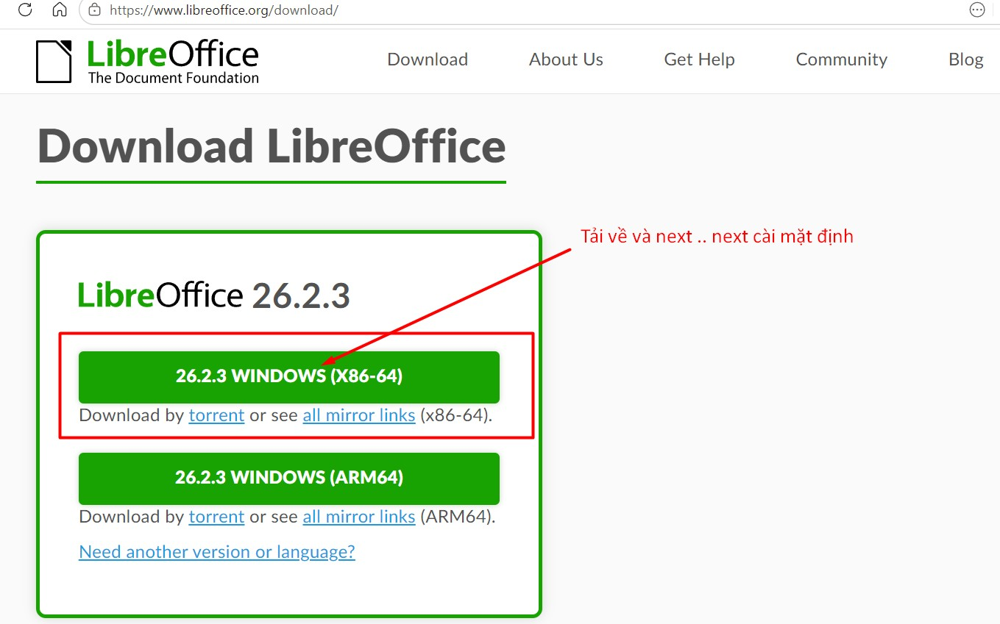

Phần mềm văn phòng mã nguồn mở

Phần mềm (miễn phí) thay thế word excel tốt nhất 05-2026 : LibreOffice
Công ty lớn như FPT software cũng đang dùng
LibreOffice là một bộ phần mềm văn phòng mã nguồn mở, miễn phí, do The Document Foundation phát triển.
Bạn có thể tải từ trang chính thức: LibreOffice
Nó gồm các ứng dụng chính:
• Writer — soạn thảo văn bản (tương tự Word)
• Calc — bảng tính (tương tự Excel)
• Impress — trình chiếu (tương tự PowerPoint)
• Draw — vẽ sơ đồ/vector
• Base — cơ sở dữ liệu
• Math — soạn công thức toán học
Điểm mạnh của LibreOffice là:
• chạy offline hoàn toàn
• hỗ trợ định dạng Microsoft Office như .docx, .xlsx, .pptx
• chạy trên Windows, Linux, macOS
• miễn phí
Hướng dẫn:
• Mặc định phần mềm Libre Writer lưu file name đuôi .odt nhưng bạn có thể chọn
--> save as type: Word 2010-365 *.docx
• Mặc định phần mềm Libre Calc lưu file name đuôi .ods nhưng bạn có thể chọn
--> save as type: Excel 2007-365 *.xlsx